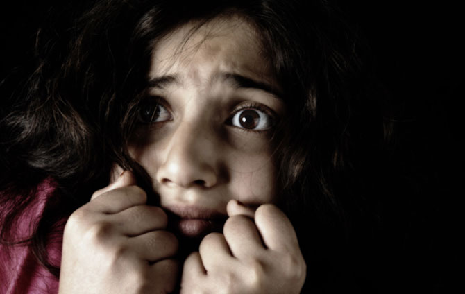

SS-Sua Segurança
Voce esta sofrendo algum crime ou algum tipo de violencia e esta com medo de denunciar?
Aqui podemos te ajudar!

Vamos conhecer algumas formas de violência:
Violência física
Ação ou omissão que coloque em risco ou cause dano à integridade física de uma pessoa.
Violência institucional
tipo de violência motivada por desigualdades (de gênero, étnico-raciais, econômicas etc.) Predominantes em diferentes sociedades. Essas desigualdades se formalizam e institucionalizam nas diferentes organizações privadas e aparelhos estatais, como também nos diferentes grupos que constituem essas sociedades.
Violência intrafamiliar
acontece dentro de casa ou unidade doméstica e geralmente é praticada por um membro da família que viva com a vítima. As agressões domésticas incluem: abuso físico, sexual e psicológico, a negligência e o abandono.
Violência moral
ação destinada a caluniar, difamar ou injuriar a honra ou a reputação da mulher.
Violência patrimonial
ato de violência que implique dano, perda, subtração, destruição ou retenção de objetos, documentos pessoais, bens e valores.
Violência psicológica
ação ou omissão destinada a degradar ou controlar as ações, comportamentos, crenças e decisões de outra pessoa por meio de intimidação, manipulação, ameaça direta ou indireta, humilhação, isolamento ou qualquer outra conduta que implique prejuízo à saúde psicológica, à autodeterminação ou ao desenvolvimento pessoal.
Violência sexual
ação que obriga uma pessoa a manter contato sexual, físico ou verbal, ou a participar de outras relações sexuais com uso da força, intimidação, coerção, chantagem, suborno, manipulação, ameaça ou qualquer outro mecanismo que anule ou limite a vontade pessoal. Considera-se como violência sexual também o fato de o agressor obrigar a vítima a realizar alguns desses atos com terceiros.
Não pense duas vezes, se você esta sendo vítima de uma violência ou conhece alguém que está,
DENUNCIE
ENTÃO CLIQUE AQUI!!